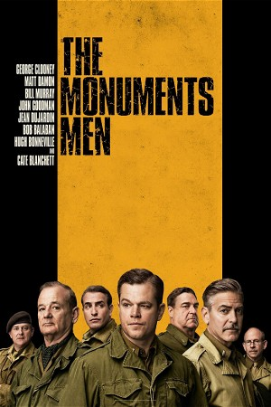

The Monuments Men (2014)
ActionDramaHistoryWar
| Year | 2014 |
|---|---|
| Rating | US:PG-13 / US:Rated PG-13 |
| Genre | Action, Drama, History, War |
Based on the true story of the greatest treasure hunt in history, The Monuments Men is an action drama focusing on seven over-the-hill, out-of-shape museum directors, artists, architects, curators, and art historians who went to the front lines of WWII to rescue the world’s artistic masterpieces from Nazi thieves and return them to their rightful owners. With the art hidden behind enemy lines, how could these guys hope to succeed?